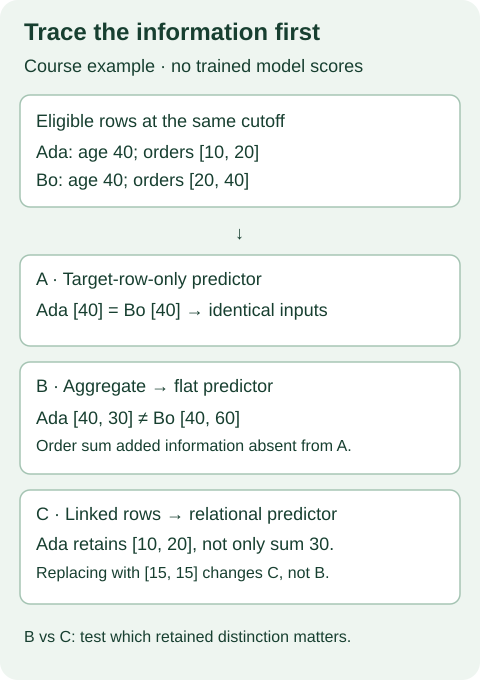

B01 · What did the comparison actually compare?¶
Year 5 → 6 bridge · Architecture coverage and honest comparison
Your win: write a comparison contract that makes one result interpretable. The mission is to find when relational learning adds value. A strong score helps only after you can say what information, computation and prior knowledge produced it.
Route: 15-minute lesson → notebook exercises → short defense. Retrieve L060's broad comparison and L170's FM checkpoint. L200 established a selected checkpoint result. It left a harder question open: which comparisons could justify the next research decision?
1 · Predict before reading¶
Close the references and answer: a graph predictor sees customers and their orders; a tree sees only customer age. The graph predictor scores higher. Have we isolated the value of graph computation?
Check your explanation
No. The graph predictor also received additional information. A useful next control gives a strong tree time-safe order features, then states what each representation retains. Even that comparison can differ in tuning, pretraining and computation.
A comparison unit is the complete evaluated configuration: input construction, predictor, adaptation, selection and inference recipe. A matched-information contract records what each configuration may observe. A matched-computation contract additionally fixes the relevant resource allowance. Equality on one axis does not imply equality on the other.
2 · Map mechanisms before ranking names¶
A trained predictor learns from the target task. A pretrained model brings knowledge learned earlier. A pipeline includes feature construction and prediction. An AutoML system searches or combines pipelines. These levels overlap: an AutoML system may contain a pretrained predictor. Always name the level of your claim.
The matrix below is a coverage checklist, not a ranking. Each row names a configuration, so “adaptation” has a concrete meaning. ICL means conditioning on support examples at prediction time. Support contains labeled examples the model is allowed to read. No task gradients does not mean no task labels.
CatBoost / LightGBM
- Feature columns
- tree decisions
- prediction
Adaptation: Fit on task labels; select with validation
Information: Given columns; relational content only if supplied
TabM
- Numeric embeddings
- shared ensemble computation
- prediction
Adaptation: Gradient training on task labels
Information: Given feature columns; validation controls selection
TabR
- Query
- learned neighbors
- label-aware aggregation
- prediction
Adaptation: Train representation and predictor on task
Information: Training candidate pool, labels and retrieval policy
TabPFN / TabICL
- Labeled support + query
- frozen contextual predictor
- prediction
Adaptation: Support conditioning; no task gradient in this configuration
Information: Labeled support, preprocessing and context budget
TabDPT
- Retrieve context
- row transformer
- prediction
Adaptation: Frozen in-context configuration
Information: Pretraining overlap and retrieved support must be audited
TabSTAR
- Text + feature values
- pretrained predictor
- task prediction
Adaptation: Downstream fine-tuning
Information: Column names and text carry additional information
MotherNet
- Labeled support
- generated MLP weights
- query prediction
Adaptation: Generate a predictor from support
Information: Support used during predictor construction; count its cost
RelGNN
- Eligible linked rows
- composite messages
- task head
Adaptation: Gradient training on task labels
Information: FK paths, sampled rows, timestamps and permitted labels
RDB-PFN
- Related rows
- DFS features
- support/query predictor
- prediction
Adaptation: Frozen checkpoint + labeled support
Information: DFS already carries relational information; arrival audit remains open
TabArena ensemble pipeline
- Candidate pipelines
- validation selection
- ensemble
- prediction
Adaptation: Search, fit and combine multiple predictors
Information: Feature engineering, selection, inference and ensemble costs count
| Family / example | Pretraining | Representation | Adaptation | Task scope / information |
|---|---|---|---|---|
| Tuned trees · CatBoost / LightGBM | No shared pretrained weights in this configuration | Feature columns → tree decisions → prediction | Fit on task labels; select with validation | Classification / regression. Given columns; relational content only if supplied |
| Numerical MLPs · TabM | Task-trained configuration | Numeric embeddings → shared ensemble computation → prediction | Gradient training on task labels | Classification / regression. Given feature columns; validation controls selection |
| Retrieval-based predictors · TabR | Task-trained retrieval model | Query → learned neighbors → label-aware aggregation → prediction | Train representation and predictor on task | Classification / regression. Training candidate pool, labels and retrieval policy |
| Synthetic-data ICL · TabPFN / TabICL | Synthetic tasks; pin the exact release | Labeled support + query → frozen contextual predictor → prediction | Support conditioning; no task gradient in this configuration | Release-specific classification / regression limits. Labeled support, preprocessing and context budget |
| Real-data ICL · TabDPT | Real tables and self-supervised prediction tasks | Retrieve context → row transformer → prediction | Frozen in-context configuration | Classification / regression. Pretraining overlap and retrieved support must be audited |
| Semantic transfer · TabSTAR | Cross-table pretraining with text semantics | Text + feature values → pretrained predictor → task prediction | Downstream fine-tuning | Paper evaluation: classification with text features. Column names and text carry additional information |
| Hypernetworks · MotherNet | Pretrained weight-generating transformer | Labeled support → generated MLP weights → query prediction | Generate a predictor from support | Paper's tabular classification setting. Support used during predictor construction; count its cost |
| Graph-native supervised learning · RelGNN | Task-supervised configuration | Eligible linked rows → composite messages → task head | Gradient training on task labels | Relational prediction; task-specific heads. FK paths, sampled rows, timestamps and permitted labels |
| Flattened relational ICL · RDB-PFN | Synthetic relational tasks; flat inference features | Related rows → DFS features → support/query predictor → prediction | Frozen checkpoint + labeled support | Selected released binary task in this lab. DFS already carries relational information; arrival audit remains open |
| AutoML systems · TabArena ensemble pipeline | Depends on constituent models | Candidate pipelines → validation selection → ensemble → prediction | Search, fit and combine multiple predictors | Benchmark-defined tasks and supported components. Feature engineering, selection, inference and ensemble costs count |
These are representative families, not an exhaustive model catalog. Semantic transfer can also use frozen encoders or ICL; TabSTAR illustrates fine-tuning. Hypernetworks generate predictor weights; their support-processing cost still counts. A relational synthetic prior and graph-native inference are different design choices. For new variants, pin a version and add a row rather than inheriting a predecessor's claims.
Read next: TabArena §2 and §3 is the primary reading. It separates defaults, tuning and ensembling, evaluates models within their supported domains, and publishes a versioned benchmark. Use its protocol to explain why two leaderboards with different comparison units can disagree. Benchmark participation is evidence of uptake, not universal superiority.
3 · A small information mismatch¶
At prediction time, Ada and Bo are both 40. Ada's eligible order amounts are [10, 20]; Bo's are [20, 40]. An age-only predictor sees identical inputs. A sum feature gives Ada 30 and Bo 60. A linked-row model can also read those orders. Any advantage over the age-only predictor could come from that extra information.
Now replace Ada's orders with [15, 15]. The sum stays 30, but the individual values change. Sum features and raw linked rows have the same source records yet preserve different distinctions. Equal eligible rows is not equal representation. Name the distinction your hypothesis says matters and test it directly. These numbers are a course-designed example, not benchmark measurements.


The fair relational benchmark §3 uses explicit hop conditions when comparing relational models and tabular baselines. Here, a hop is a traversal across a table relationship. Borrow the question “which neighbors were eligible?” without treating hop count alone as a full leakage or budget audit. We do not rerun that paper in B01.
4 · Freeze a contract before computing a difference¶
| Field | Concrete question |
|---|---|
| Task, labels and split | Same outcome definition, prediction horizon and evaluation split? |
| Complete query keys | Same (entity, cutoff) population, with no missing or duplicate queries? |
| Features and support | Same materialized inputs and paired labeled support where claimed? |
| Preprocessing and visibility | What is fitted on which rows? What labels, text and related records are visible? |
| Selection | Which validation choices, candidates and stopping rules were allowed? |
| Metric | Same direction, aggregation, ties and uncertainty unit? |
| Budget policy | What training, search, context, ensemble and inference costs belong to each configuration? |
Worked frozen case. L200 used released DFS feature arrays, fixed checkpoints, and 512 support rows for each of ten paired draws. DFS means aggregated features built from related tables. RDB-PFN and TabICL received relational information in those features. Their observed difference compares those fixed configurations on one test population. It does not identify a graph operator's benefit.
The audit hashes actual query keys, labels, support identities and the prepared feature artifact. It checks the complete run grid before summarizing. The common budget policy declares the fixed evaluation; it does not claim equal pretraining or measured inference costs. Per-model checkpoints and recipes remain in the frozen protocol.
Availability is a separate question. We can authenticate the released arrays without proving when all underlying records arrived. For a claim about historically available information, the visibility field is NOT_ESTABLISHED. The equality checker only checks the declared contract; source evidence must justify its values.
Baseline: matching released inputs; complete saved replay; selected-score claim. This is a declared-contract simulator.
Try three repairs: restore a mismatched support draw; change visibility to unknown; then ask for an architecture-cause claim with every field matched. Explain why that last claim still lacks an intervention that isolates architecture.
5 · Reproduce the whole selected audit¶
Named lane: B01-MATCHED-COMPARISON-AUDIT. All three L200 configurations × ten support draws × 702 queries are included. Raw predictions are rescored with the inherited pairwise AUROC implementation and checked with an independent rank-sum implementation. Original report parity is exact. Seven altered-evidence cases are rejected in disposable copies. The machine-readable report separates this new replay from the original fresh inference.
| Configuration | Replayed mean AUROC | Sample SD | Original rounded target |
|---|---|---|---|
| RDBPFN | 0.721938 | 0.019983 | 0.7219 |
| RDBPFN_single | 0.663990 | 0.034177 | 0.6640 |
| TabICLv1.1 | 0.717568 | 0.009770 | 0.7176 |
RDB-PFN − TabICL: +0.004369 mean paired difference; positive in 6/10 draws. All 30 original results are retained.
Work one paired difference. Draw 0 gives the two configurations the same support rows. Subtract TabICL's AUROC from RDB-PFN's AUROC for that draw, then repeat for every draw and average. Never pair merely by file order. The notebook reverses one list to check this. Sample SD measures variation over support draws on one fixed test population; it is not uncertainty across databases.
What is actually reproduced? The saved predictions and reported aggregates, including the original experiment's full selected grid. No new model inference happens in B01. The original fresh-inference command is available separately. Full TabArena, fair-RDB benchmark, and synthetic pretraining reproductions remain NOT_RUN.
Inherited limitations: released-label orientation is preserved; the released checkpoint width is 96 while the appendix says 128. Full DFS regeneration and historical feature-arrival proof are absent. We preserve these boundaries instead of replacing the experiment with a cleaner-looking one.
6 · Your notebook and defense¶
Open the student notebook. Implement three small functions: classify a contract, join all ten draw pairs, and limit claims to available evidence. Each feeds the complete replay. A constant answer fails the CHECKs. The executed solution includes the visible implementation and an offline evidence bundle.
Then write 250–400 words choosing one future B23 comparison. Include the baseline family and why it is credible, the complete comparison unit, one matched-information control, one resource policy, two falsification tests, and an observation that would change your research direction. State every unresolved contract field. This is a draft for B23, not authorization to launch it.
| Teacher review | A defensible answer |
|---|---|
| Mechanism | Trace input → representation → adaptation → prediction for both configurations. |
| Competing explanation | Explain one information or budget mismatch that could create the observed gap. |
| Falsification | State two checks whose failure would weaken the claim; say what happens next. |
| Boundary | Distinguish saved replay, fresh inference, architecture causality and learner mastery. |
A checklist can catch omissions; the teacher must review the reasoning. Exit status stays PENDING_WRITTEN_DEFENSE. Preparing B01 does not satisfy L200's incomplete exit.
Retrieve after 1, 7 and 30 days: why can correct leaderboards disagree? How can a flat feature table contain relational information? Why can two matching unknowns not establish a fair historical comparison? Ask the agent about unclear steps or submit your contract for feedback.
Printable field guide · Bridge plan and B02 · Source and deviation protocol.